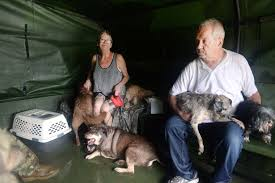

What We Do
We are a team made up of three passionate individuals who believe every animal in need deserves a chance at a better life.
Millions of animals worldwide are in need of a loving family and safe place to live. BAM Animal Rescue is a no-kill rescue dedicated to helping every animal in need feel safe and loved!
We are a team made up of three passionate individuals who believe every animal in need deserves a chance at a better life.

We are Bree, Andy, and Matt!
Duke was rescued from an alley in Seattle. He now lives in a happy home and loves to play fetch!

Charlie was purchased as a pet off of the black market. Charlie was severely neglected before he was rescued. He now lives in an animal sanctuary where he eats all of the salmon and berries he can get his paws on.
Jameson was used for enternainment at Sea World. He was rescued and sent to a sanctuary zoo where he lives happily with a pod of dolphins.